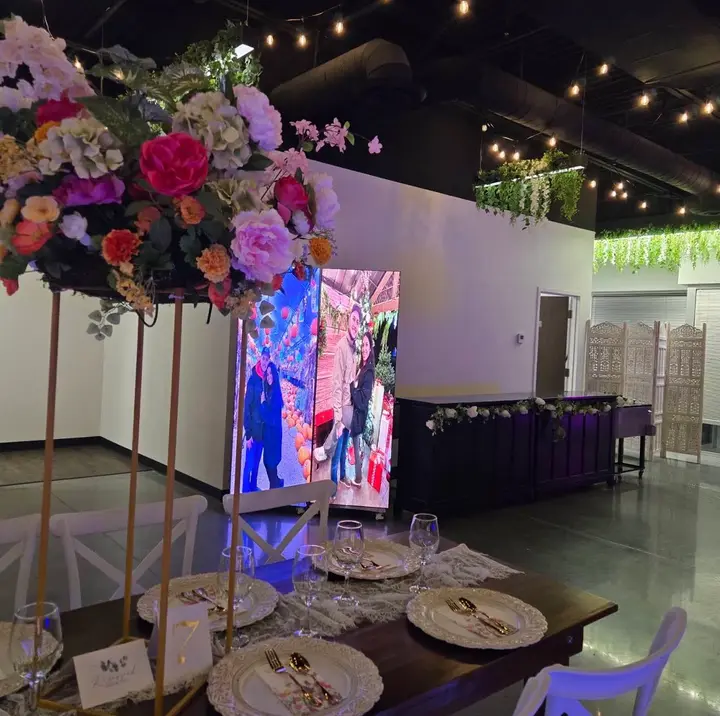
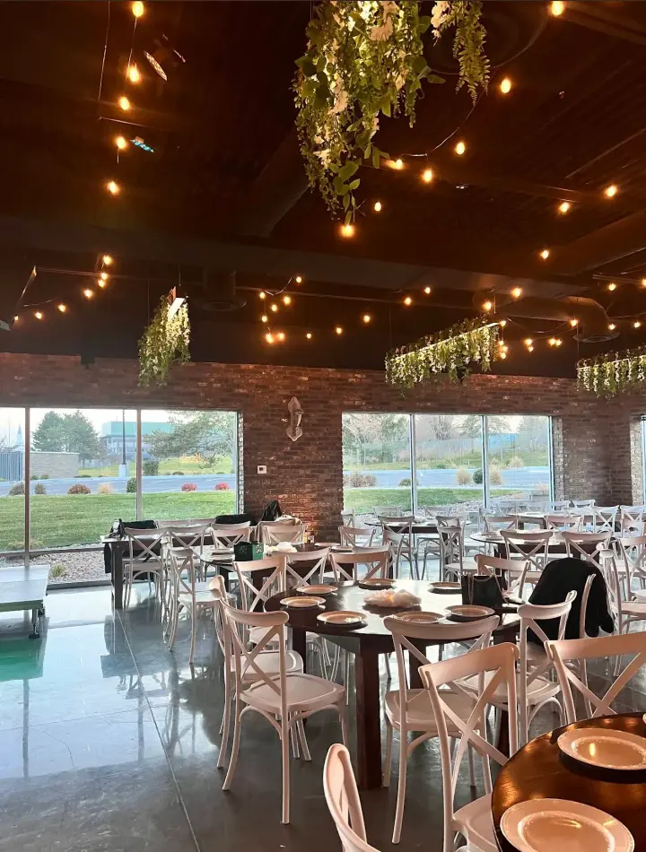
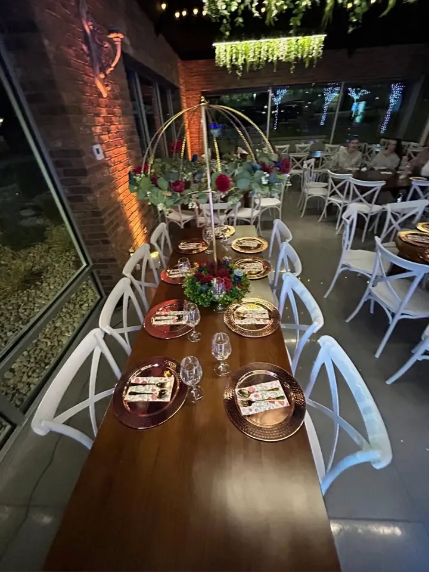
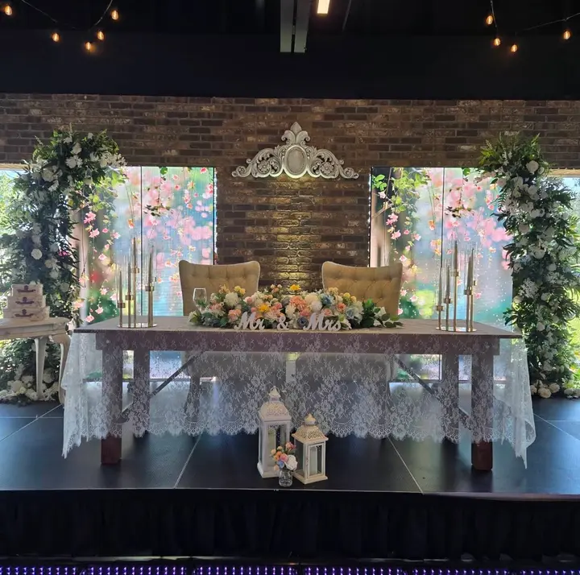
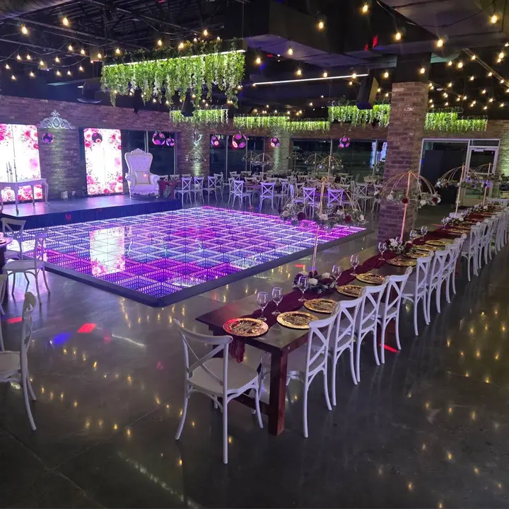

Mismo contenido, cinco maneras de contarlo. Cada una usa las fotos reales del salón y el cotizador de servicios y extras. Abra cada una en el celular y en la computadora.

Una edición impresa: nombre gigante, índice, artículos con capitular y citas grandes. Papel, tinta y ladrillo.
Abrir →
Estilo suizo contemporáneo: tipografía enorme, retícula visible, fotos a sangre y un solo color de acento.
Abrir →
Cálida y terrosa: bloques de terracota, olivo y adobe, una serifa amable y una banda de dientes de sierra.
Abrir →
Aire y luz: verdes salvia, crema y rubor, fotos en arco, esquinas muy redondeadas y cursivas elegantes.
Abrir →
Gala de otra época: esmeralda, oro y marfil, esquinas escalonadas, rayos y filetes dobles.
Abrir →